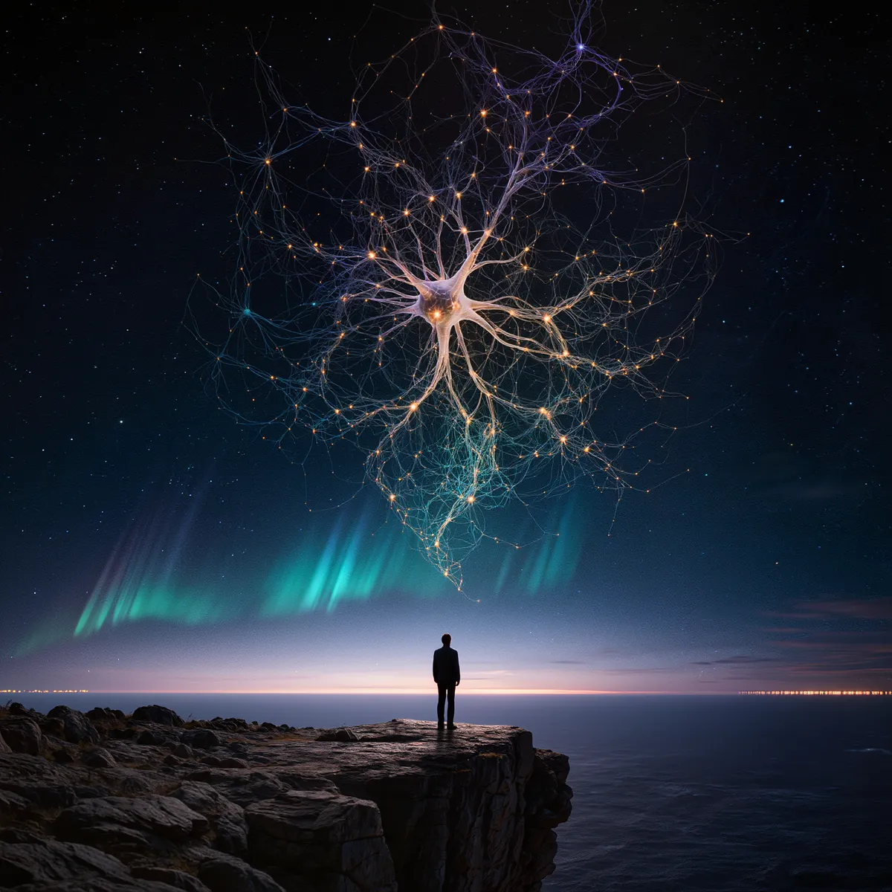

Крок за горизонт: інтуїція і рішення
в умовах невизначеності
Навчитись чути підсвідомість — реально. Це не містика, це нейронаука. Тренінги, відеолекції та практичні вправи для тих, хто хоче думати глибше і діяти впевненіше.
«Найціннішим стало те, що все підкріплено наукою. Конкретні механізми, конкретні вправи — і конкретні результати вже через тиждень.»
— Василь, 45 р. · Повний курс, 6 модулів

Який тип інтуїтивного мислення в тебе?
12 питань. 5 хвилин. Результат на основі моделей Канемана, Кляйна, Дамасіо.
Тест не «вгадає», який ти. Він покаже, як працює твоя система прийняття рішень: де у неї сила, де — сліпа пляма. На основі цього отримаєш персональну рекомендацію — з чого почати тренування.
Це не магія. Це нейронаука у твоєму темпі.
Твої відповіді не зберігаються до кінця тесту. Email запитаємо в самому кінці.
Питання 1 з 12
Ще секунда — і твій результат
Куди надіслати персональний розбір твого типу + бонусний матеріал?
Готуємо твій результат...
35+
років досліджень
2000+
учасників програм
60+
відеолекцій
18
практичних вправ
Наукова основа
Три стовпи програми
🔮
Інтуїція як навичка
Мозок обробляє досвід поза свідомістю і видає готове рішення у вигляді відчуття. Це тренується.
Klein, 1998 · MIT Press
⚡
Рішення під тиском
Стрес блокує раціональне мислення, але відкриває глибші ресурси — якщо знати, як до них звернутися.
Kahneman, 2011 · Нобелівська премія
🧠
Нейропластичність
Мозок дорослої людини здатен формувати нові зв'язки. Цілеспрямована практика змінює якість мислення.
Семінар: Інтуїція в умовах невизначеності. Частина 1
Інтуїція в умовах невизначеності. Частина 1
Семінар⏱ 48 хв
Вправа «Дистанція» — демонстрація
Вправа «Дистанція» — демонстрація на семінарі
Вправа⏱ 22 хв
Система 1 і Система 2 — лекція
Система 1 і Система 2: нейронаука рішень
Лекція⏱ 35 хв
Відеоархів
Відео з семінарів і тренінгів
Записи з живих семінарів, демонстрації вправ, фрагменти тренінгів. Архів поповнюється після кожного заходу.
Повна запис семінару «Крок за горизонт» · Київ 2025
✦ Рекомендуємо подивитись
Семінар «Крок за горизонт» — повний запис. Київ, 2025
Повний запис дводенного семінару. Теорія інтуїції, практичні вправи, групова робота, розбір реальних ситуацій учасників. Найкращий спосіб відчути формат, якщо ще не були на живому заході.
📅 Листопад 2025 · ⏱ 3 год 42 хв · 👥 Семінар
Інтуїція в умовах невизначеності. Ч.1
Інтуїція в умовах невизначеності. Частина 1
Семінар⏱ 48 хв
Інтуїція в умовах невизначеності. Ч.2
Інтуїція в умовах невизначеності. Частина 2
Семінар⏱ 51 хв
Груповий розбір: рішення в кризі
Груповий розбір: рішення в кризовій ситуації
Семінар⏱ 37 хв
Вправа «Знайди голку»
Вправа⏱ 10–15 хв
Вправа «Подвійне зв'язування»
Вправа⏱ 15–20 хв
Вправа «Близнюковий режим» + «Інформаційний слід»
Вправа⏱ 20–30 хв
Вправа «Траєкторне управління»
Вправа⏱ 20–30 хв
Вправа «Кажан»
Вправа⏱ 15–20 хв
Вправа «Пошуковий режим»
Вправа⏱ 10–15 хв
Вправа «Баланс»
Вправа⏱ 10–15 хв
Вправа «Потяг» (складні системи)
Вправа⏱ 25–35 хв
Вправа «Відчуття ритму»
Вправа⏱ 10–15 хв
Вправа «Каталепсія»
Вправа⏱ 30–40 хв
Напрацювання пошукової моделі
Вправа⏱ 20–30 хв
Інформаційно-польові взаємодії
Вправа⏱ 30–45 хв
Вправа «Стежка страху»
Вправа⏱ 25–35 хв
Вправа «Гей!»
Вправа⏱ 5–10 хв
Вправа «Пошуковий режим» ч. 2
Вправа⏱ 10–15 хв
Заліки
Вправа⏱ 40–60 хв
Система 1 і Система 2: нейронаука
Система 1 і Система 2: нейронаука рішень
Лекція⏱ 35 хв
Що таке когнітивні упередження
Когнітивні упередження: що заважає інтуїції
Лекція⏱ 42 хв
Інтерв'ю: науковий підхід до інтуїції
Інтерв'ю: чому наука взялась за інтуїцію
Інтерв'ю⏱ 28 хв
Практика
Вправи для розвитку інтуїції
Практичні техніки, засновані на нейронаукових дослідженнях. Виконуйте самостійно або використовуйте як підготовку до семінарів.
Всі вправи розроблені на основі досліджень у галузі когнітивної нейронауки та психофізіології. Рівень складності позначається кольором лівої межі: ■ початковий · ■ середній · ■ просунутий. Рекомендуємо починати з початкового рівня і рухатись послідовно.
🎧
«Тілесний компас»
■ Початковий рівень
Розвиток інтероцепції — здатності відчувати і розпізнавати тілесні сигнали, які є першим носієм інтуїтивної інформації.
Порівняйте. Яке рішення дало найменш катастрофічний «провал»? Часто це і є найрозумніший вибір.
Навчання
Інтерактивні лекції
Глибокі лекції з психології результату, мислення і внутрішніх процесів. Читайте, взаємодійте, проходьте тести прямо на сторінці.
01
Формула результату
📖 Інтерактивна лекція⏱ ~20 хв читання🔒
Чому одні люди досягають, а інші буксують? Математична формула, яка пояснює результат через бажання, переконання, дію, оточення і ресурс. З тестами і вправами.
Практика
Практикуми
Покрокові методички з вправами до лекцій. Не просто знати, а робити і змінюватись.
01
Практикум β: як навчитися рости зі свого досвіду
✏️ Практикум⏱ 10 вправ🔒
Десять вправ на найвпливовіший компонент формули результату. Три рівні: помічати, видобувати, застосовувати. З прогрес-трекером і контрольними точками.
02
Практикум П: як перестати працювати проти себе
✏️ Практикум⏱ 10 вправ🔒
Робота з переконаннями й ідентичністю — фільтром, крізь який ти бачиш себе. Три рівні: побачити фільтр, перевірити й розхитати, перепрошити ідентичність. З підтримкою бота «Опора».
03
Практикум Б: як знову почати хотіти своє
✏️ Практикум⏱ 10 вправ🔒
Робота з бажанням — двигуном формули. Як відрізнити своє «хочу» від нав'язаного й від звички, перевірити, чи воно живе, і розпалити його в дію. Три рівні. З підтримкою бота «Опора».
04
Практикум Д: як рухатись, а не просто метушитись
✏️ Практикум⏱ 10 вправ🔒
Якість, напрямок і регулярність дій — три множники, які визначають, чи їде твоя машина і куди. Як знайти дії з найбільшим важелем, почати без натхнення і тримати регулярність без героїзму. З підтримкою бота «Опора».
05
Практикум О: як свідомо обирати поле, в якому ростеш
✏️ Практикум⏱ 10 вправ🔒
Оточення «заражає» через дзеркальні нейрони — без твого зусилля. Як побачити своє поле, перевірити його вплив і почати свідомо його формувати. Кордони, голоси, своя спільнота. З підтримкою бота «Опора».
06
Практикум М: як навчитись бачити те, що вже поруч
✏️ Практикум⏱ 10 вправ🔒
Десять вправ на вміння помічати шанси і ними скористатись. Ретикулярна формація, слабкі зв'язки, мінімальна дія на можливість. З підтримкою бота «Опора».
07
Практикум Рес: як наповнювати себе, а не лише витрачати
✏️ Практикум⏱ 10 вправ🔒
Паливо формули. Де витікає ресурс, як зупинити злив, як справді відновлюватись і як запустити петлю самовідновлення. Від термометра ресурсів до маховика. З підтримкою бота «Опора».
Відгуки
Що кажуть учасники
Відеовідгуки та письмові відгуки людей, які пройшли семінари і курси програми «Крок за горизонт».
Лариса Чернокрилюк
Практичний психолог · Київ
«Як будь-яку здатність, інтуїцію треба розвивати. Це не дається відразу, це треба підтримувати.»
Наташа Піддубна
Учасниця семінару · Київ
«Це працює як формула. Як формула нашого тіла. Якщо ми навчимося її використовувати, це буде найкраще для поліпшення нашого життя, стосунків і гармонії з собою.»
Аліна Лисенко
Учасниця семінару · Київ
«Їду іншою людиною. Я переосмислила себе, я знаю свої можливості. Я розумію, що так як було, не буде. Я буду змінюватися далі.»
Яригіна Юля
Учасниця семінару · Павлоград
«Мої фільтри розширилися. Світосприйняття, смакові відчуття, емоційні. Якщо з цим працювати, я розумію, як можливо розширити світ: бачити набагато більше, чути набагато краще і відчувати сильніше.»
Олена Шинкаренко-Піц
Учасниця семінару · Козелець
«Раджу відвідати цей чарівний куточок, який і оздоровлює, надихає та навчає жити в новому просторі і відчувати простір.»
★★★★★
«Я завжди думала, що інтуїція — або є, або нема. Виявилось, що це навичка. Найбільший інсайт — усвідомлення, що мої «передчуття» часто були страхом, а не мудрістю. Тепер я їх розрізняю.»
О
Оксана, 38 р.
Семінар «Крок за горизонт» · Київ
★★★★★
«Найціннішим стало те, що все підкріплено наукою. Жодної «позитивної психології» чи порад «просто довіряй собі». Конкретні механізми, конкретні вправи, конкретні результати.»
В
Василь, 45 р.
Повний курс · 6 модулів
★★★★★
«Вправа «Відпускання задачі» — це просто одкровення. Я нарешті зрозуміла, чому мої найкращі рішення приходять не за столом, а під час прогулянки.»
С
Соломія, 31 р.
Онлайн-курс
★★★★☆
«Дуже насичена програма. Іноді хотілось повільніше — матеріалу багато. Але якість на дуже високому рівні. Рекомендую всім, хто приймає рішення в умовах невизначеності.»
А
Андрій, 52 р.
Семінар-інтенсив · 2 дні
Навчання
Відеолекції
Структурований курс відеолекцій з нейронауки інтуїції та прийняття рішень. Дивіться у своєму темпі, повертайтесь до потрібних тем.
01
Мова, якою ти думаєш. Межі твоєї мови — межі твого світу
🎓 Лекція⏱ 10:51🔓 Безкоштовно
Як мова не описує реальність, а будує її — від граматичного роду до внутрішнього діалогу, що змінює тіло.
02
Твій мозок не камера. Передбачувальне кодування Фрістона
🎓 Лекція⏱ 13:52🔓 Безкоштовно
Карл Фрістон і принцип вільної енергії. Чому твій мозок не сприймає реальність — а передбачає її. Просто про складне.
03
Когнітивна гнучкість. DMN і ригідність мозку
🎓 Лекція⏱ 11:20🔓 Безкоштовно
Чому твій мозок ніколи не вимикається — і як навчитись думати гнучко замість того, щоб застрягати в петлі.
04
Чому мозок зависає під час стресу
🎓 Лекція⏱ 4:35🔓 Безкоштовно
Чому в стресі мозок бачить менше варіантів — і як повернути ясність через біологію, а не силу волі.
05
Що таке інтуїція. Нейронауковий погляд
🎓 Лекція⏱ 14 хв🔓 Безкоштовно
Нейронаукове пояснення інтуїції: Система 1, соматичні маркери Дамасіо, передбачувальне кодування Фрістона. Без містики — тільки наука.
06
Коли мозок бреше — а ми довіряємо
🎓 Лекція⏱ 11:24🔓 Безкоштовно
Когнітивні упередження, що маскуються під інтуїцію.
07
Інсайт: чому «ага-момент» виникає і як його провокувати
📅 Середній рівень⏱ 48 хв
08
Тиші не існує. Мова вібрацій
🎓 Лекція⏱ 11:38🔓 Безкоштовно
Як рослини чують воду, чому квіти змінюють нектар від звуку бджоли, і чи може це бути ключем до інтуїції.
09
Хто такий Девід Бом
🎓 Лекція⏱ 19 хв🔓 Безкоштовно
Фізик, якого злякала його ж теорія. Учень Оппенгеймера, колега Ейнштейна — і людина, яка наважилась сказати фізиці те, що вона не хотіла чути.
10
Частотна когерентність мозку і інтуїція
📅 Просунутий рівень🔓 Безкоштовно
Твій мозок постійно генерує електричні хвилі. Коли різні його зони синхронізуються на одній частоті — це і є когерентність. Саме вона є нейронною основою інтуїції. У цьому відео ми розбираємо 5 частотних діапазонів мозку — і побачимо як кожен з них пов'язаний з твоєю здатністю «відчувати нутром».
11
Мозок-антена? Пенроуз і квантова свідомість
📅 Просунутий рівень🔓 Безкоштовно
Нобелівський лауреат Роджер Пенроуз вважає, що мозок — це не генератор свідомості, а приймач. Усередині нейронів є мікротрубочки, через які мозок підключається до квантових процесів Всесвіту. Свідомість існує поза людиною — ми лише маємо до неї доступ.
Навчання
Семінари і курси
Вибирайте формат, який підходить саме вам — від короткого знайомства до повного курсу з глибокою практикою.
✦ Безкоштовно · Онлайн
Відкрита лекція: «Що таке інтуїція і чи можна її розвинути?»
Вступна 2-годинна зустріч. Нейронаука інтуїції, перша практична вправа, відповіді на запитання. Ідеально, щоб відчути підхід і зрозуміти, чи ваше.
📅 Дата уточнюється
⏱ 2 години · онлайн
👥 Без обмежень
Що буде на зустрічі
Що таке інтуїціяСистема 1 і 2Вправа-демонстраціяQ&A
⭐ Найпопулярніше · Офлайн
Семінар-інтенсив «Крок за горизонт»
Дводенний живий семінар з повним зануренням. Теорія + інтенсивна практика + групова робота + індивідуальний зворотний зв'язок.
📅 Дата уточнюється
📍 Київ · офлайн
👥 До 14 осіб
Модулі
Слухаємо себеНейронаука рішеньІнсайтТиск і ясністьУпередження vs інтуїціяІнтеграція
Повний курс · Гібридний
Курс «Крок за горизонт» — 6 модулів
Глибокий шеститижневий курс: щотижневі очні або онлайн-заняття, домашні практики, доступ до відеолекцій, підтримка між сесіями.
📅 Дата уточнюється
📍 Київ + Онлайн
👥 До 12 осіб
Включено
6 занять по 4 годДоступ до лекційПідтримка в групіЗворотний зв'язок
Онлайн · Свій темп
Онлайн-курс у записі
Усі відеолекції, практичні матеріали і вправи у вашому темпі. Щотижневі групові відеодзвінки для питань і підтримки спільноти.
📅 Старт: будь-коли
📍 Онлайн
👥 Потоки по 15 осіб
Включено
8 відеолекцій6 вправ з описомГрупові дзвінкиЧат учасників
Про проект
«Крок за горизонт»
Науково-практична програма розвитку інтуїції та навичок прийняття рішень в умовах невизначеності.
Програма «Крок за горизонт» виникла на перетині нейронауки, когнітивної психології та практичного досвіду роботи з людьми в умовах реальної невизначеності. Наша центральна ідея: інтуїція — це не дар, це навичка.
Ми спираємось на дослідження Деніела Канемана (Нобелівська премія, 2002), Гері Кляйна (теорія натуралістичного прийняття рішень), Антоніо Дамасіо (соматичні маркери) та сучасні роботи з нейрофізіології та інтероцепції.
За час існування програми через семінари і курси пройшли понад 2000 учасників з різних міст і професій. Від лікарів і підприємців до педагогів і творчих фахівців.
Формат постійно розвивається: ми знімаємо відеолекції, публікуємо записи семінарів, розробляємо нові вправи. Сайт — це живий архів і ресурс для всіх, хто в процесі.
Наукова база програми
Kahneman, D. (2011). Thinking, Fast and Slow. — модель Системи 1 і 2
Klein, G. (1998). Sources of Power: How People Make Decisions. MIT Press.
Damasio, A. (1994). Descartes' Error. — роль емоцій і тіла в рішеннях
Garfinkel & Critchley (2016). Interoception, contemplation and health. Frontiers in Psychology.
Soon et al. (2008). Unconscious determinants of free decisions. Nature Neuroscience.
Команда
🎓
Світлана Сліпченко · Провідний тренер
Когнітивна психологія, нейронаука. 15 років практики в галузі прийняття рішень
🔬
Науковий куратор
Нейрофізіологія, психофізіологія. Рецензує методичну базу програми
🎭
Тренер-практик
Емоційний інтелект, тілесні практики. Веде групові вправи на семінарах
📖
Методолог
Розробка вправ і курсів. Адаптація наукових досліджень у практичні форми
Зв'язок
Контакти і запис
Запишіться на тренінг, поставте питання або запропонуйте співпрацю.
Напишіть нам
Відповідаємо на всі запити. Можна записатися на тренінг, дізнатись про корпоративний формат або просто поставити питання про програму — без жодних зобов'язань.